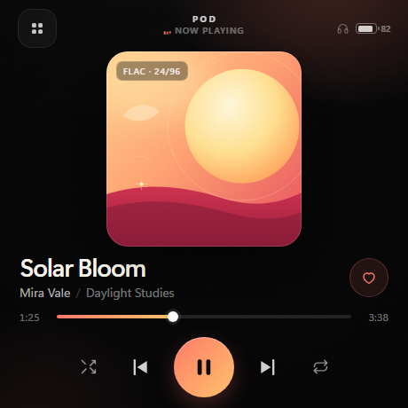
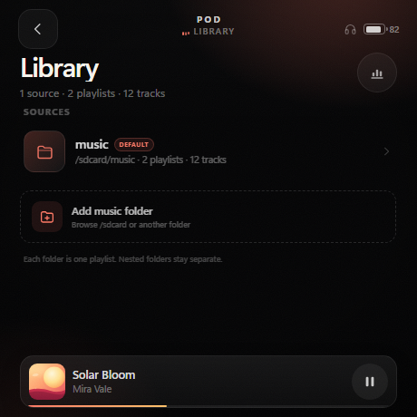
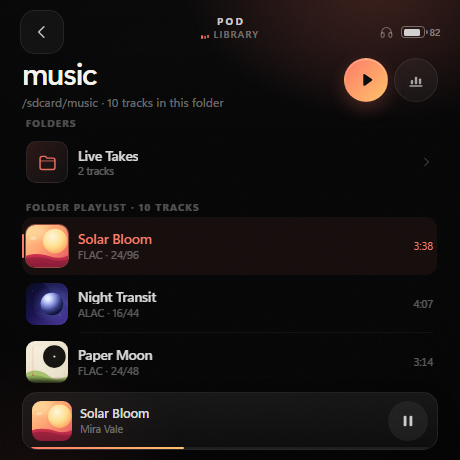
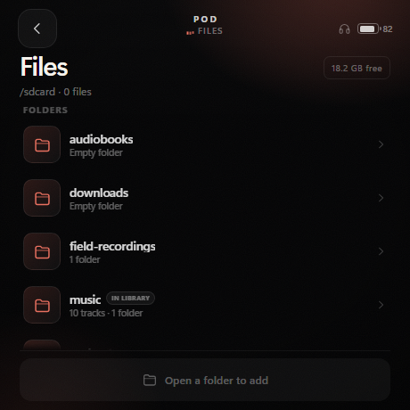
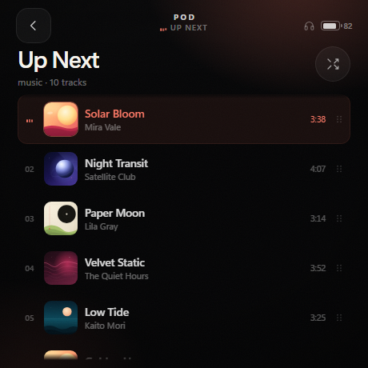
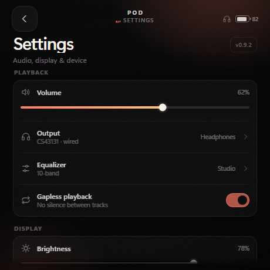
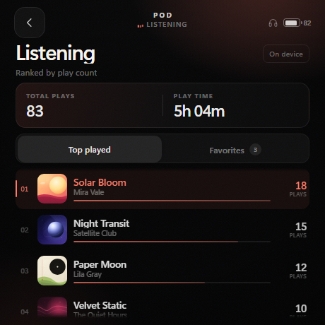
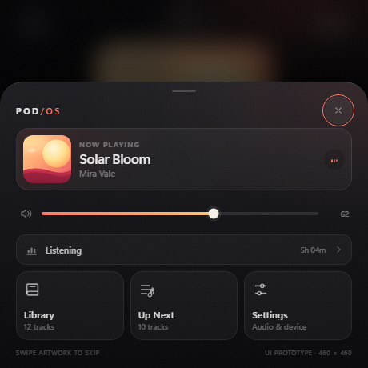

01Now Playing
220 px art · 68 px playAn eight-screen study for a two-inch OLED player. Every folder is one playlist made of its direct audio files; nested folders stay independent. Listening stats stay local — no clock or calendar required.







